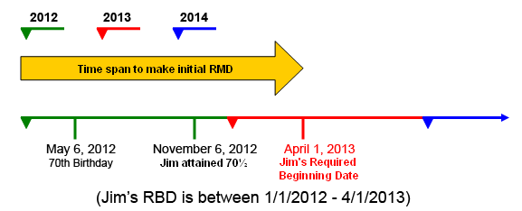
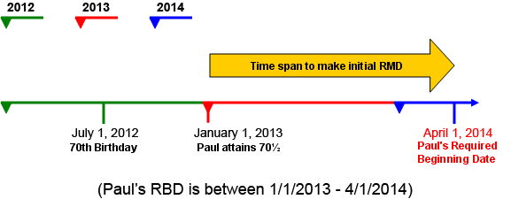

When Must RMDs Begin?
The date by which Required Minimum Distributions (RMD) must begin is referred to as the Required Beginning Date (RBD). The RBD is defined as the following:
That is not to say that the initial RMD must be made on April 1. Rather, it is to say that sometime between the start of the year in which the owner turns 70½ and April 1 of the following year, the first RMD must be made. The following examples can clarify this definition.
Click the icon to view Example #1.
EXAMPLE #1: Jim McCutcheon was born on May 6, 1942. When is his RBD?

Click the icon to view Example #2.
EXAMPLE #2: Paul Denton celebrated his 70th birthday on July 1, 2012. When is his RBD?
